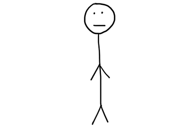

当我们开始阅读这篇文章的时候，我们可以首先回想一下曾几何时我们总是会问自己下面这些问题：
–我为什么存在？
–为什么我会在意自己在做什么？
–决定我是现在这样一个我的基因是怎么来的？如果向上追溯这种基因来源的话会不会得到一些神奇的或者奇怪的结果？
为了得到最终的结果，让我们从现在的我开始一大步一大步的追溯，看看最终到底能追溯到哪里。
我们从你开始，虽然我不认识你，但是你起码看起来是下面这样的构造：

为了让事情显得简单一点，我们接下来向上从你父亲家族这条支线向上追溯你的DNA，当然你还有来自你母亲的DNA。
所以，往前走一步我们得到了你父亲：
然后接下来是你爷爷，太爷爷，太太太爷爷，或许出生在1825到1875年之间，看起来或许是下面这个样子：
你太太太爷爷在他的一生中或许没有自来水也没有电，可能比你更看中种族，你没有见过他，但是可以肯定的是没有他就没有你。
然后我们再往上追溯他的爸爸，爸爸的爸爸…..再追溯他的18代祖宗，也就是你的太太太…太爷爷(20几个太)，接下来我们用太的20次方表示。
你的太20爷爷肯定是真实存在过的或许和你还有相同的姓氏哦。由于他可能生活在一个异常残酷的战争年代，所以如果在路上他碰到你的话讲不定秒秒种就把你干掉了，不过这种事情应该不会在你遇见你的太500爷爷的时候发生。
你的太500爷爷用不着花很多年来规划和实践自己的职业生涯，他这一辈子都会忙于捕猎或是部落之间打个群架，并且要尽可能的在他30多岁临终着使一个人孕，如果他没有做到这点的话，之后就不会有你以及另外数百万人。

下面我们将要进入的时期人类还不完全算是现在的人类，这个时期有一种特别的人类生活在世上。科学家们称之为Y染色体亚当。Y染色体亚当是目前的男性所能追溯到的最早的祖先，换句话说，他不仅仅是你的太14000爷爷而是所有人的太14000爷爷。这个Y染色体亚当是个什么样的人呢？他可能长得很寒碜，让人看了非常的不爽，甚至可能是个强奸犯。但是好消息是他存活着，而且活得足够的长，以至于可以把他的基因传承下来。要不是这样的话世界将不是现在这个世界，我们所有人都不会存在了。
接下来事情就会变得有点古怪咯。三百万年前，那时候还有真正意义上的人类。那时候我们的祖先是猿和人类的某种杂交品种，称之为南方古猿。所以你的太220000爷爷不是一个真正意义的人类，他的大脑只有现在人类的35%大小。但是第是我们祖先中第一个直立行走的，这让他可以把双手解放出来做别的事情，比如使用工具，这样就可以让他变得越来越聪明，从而失去大脑的发展。
你的太550000爷爷是一个非常特别的而重要的猴子。他不仅仅是所有人类的祖先，也是所有黑猩猩的祖先。这是我们在和黑猩猩在黑历史上最早的共同祖先，科学家认为差不多在600万年前开始人类和黑猩猩朝着各自的两个不同的方向发展。这意味着当时或许有这么一只猴子生了两个娃，一个变成了黑猩猩一个则变成了人类。
和后来的后代们不同，你的太15000000爷爷的一生或许非常的痛苦，因为他需要和恐龙生活在一起，直到6600万年前某颗小行星撞击了地球导致恐龙灭绝，那时候的哺乳动物普遍比较小只，是世界上的二等公民，而且大多生活在树上。图上画的这货或许就是所有灵长类的祖先。
接下来你不得不冷静的接受下面这个事实，你的太55000000爷爷是啮齿类动物。具体的说它属于真哺乳亚纲，是第一种哺乳动物，是除了有袋动物和蛋生哺乳动物的祖先。如果有人之前为鲸鱼写了和篇追溯其祖先的博客的话， 那么从这里开始我们可以完全照抄其博客的内容了，因为接下来我们和鲸鱼的祖先是一样的。
相比现在很多人看到一条蜈蚣可能会尖叫或是马上找个东西把他干掉或者当作没事发生一样忽略它，你的太125m爷爷会吃了它。因为你的太125m爷爷是一种早期蜥蜴，他有手有脚，有强大的神经系统，他是所有哺乳类，爬行类和鸟类的祖先。比较特别的是在爬行类和哺乳类之间还有一种比较奇怪的动物，它们是卵生的但是是哺乳动物，比如鸭嘴兽。
你的太160m爷爷讨厌自己的生活。他是我们的祖先中第一个走出海洋的，就像现代人移居到新大陆一般，放弃自己原先所有的生活方式从零开始，因为他或许知道这对于子孙后代的长远发展来说是有利的。”行走”是你的太160m爷爷在新大陆所人撑握的必备技能，为了就是哪天我们可以不再生活在潮湿黑暗的海洋里。
他被称为棘螈，并且他开创了新多新的功能，比如同时用肺和腮呼吸，用鱼鳍代替骨头，进而进化成后代的手和腿。
你的太220m爷爷是条鱼。看看你的身体和四肢，再看看图上的鱼，你的四肢就是由两对看上去十分脆弱的鱼鳍进化而来的。鱼鳍的作用是用来在海水里保持平衡，而现在四肢的作用则要发达的多。他的另外一个先进之处是他有下巴，在他之前的祖先的嘴都只有一个吸入孔。
如果你看到你的太255m爷爷长得像条扁虫千万别觉得奇怪，因为他就是。不过他有两项种要的发明，一个是有大脑，还有一就是他是第一种双面的动物。
我不知道怎么说，到这里为止只是你祖谱的一部分。
我希望你可以暂停个几秒钟，如果你把你爸爸，爸爸的爸爸，爸爸的爸爸的爸爸这样重复435000000次，你会得到一只水母。进化是多么的神奇啊！
我们在这里提到水母，是因为他进化出了神经和肌肉。同时眼睛也差不多是在这个时期进化出来的，有一种理论认为这个时期正是寒武纪生物大爆发的时期。
你的太555m爷爷是一只海绵动物，他的生活可谓无聊至极。
他可以算是世界上第一个动物，在此之前所有其它生命都只有一个细胞，而他是第一种由多细胞构成的生命。图上的植被实际上是不应该存在的，那个时候还没有这样的植物，我现在才意识到犯了这个错误。
我们接着要向上追溯很久很久，直到你的太100b爷爷，第一个单细胞真核生物。他或许貌不惊讶人，但是他是所有动物的祖先，并且发明了性别，看上去挺可爱的。
再接着往前走，我们来到地球生成的早期，这个时候来到了你太850b爷爷生活的年代，一个倒霉的毫无魅力的单细胞细菌。他的伟大发明是光合作用，由于光合作用的存在使得我们居住的星球有充足的氧气。
回到11.5万亿代前，差不多38亿年前，我们终于追溯到了终点，第一个生命，地球上所有生命的祖先。我们并不是很确定他是怎么产生的，这是一个等待科学家们去发现的伟大的问题之一。目前有好多理论，比如是自发的从无机物突变形成的，也有说是来自外太空其它星球的。不管怎么样，我们应该感谢38亿年前他的出现，才有了之后我们丰富的生活。
最后我们来总结一下，主要有以下两点反思：
1)我们基因的故事多么的丰富。你的基因走过了多么漫长的道路，通过万亿代不同生物的发展，经历了不知道多少次的突变才形成现在的样子打包在你的染色体中。你之所以是你现在的样子都和先前水母，蜥蜴，猴子为了适应他们所生存的环境所作的进化有关系。比如我读到过我们之所以会打嗝，是因为我们体内残余着史前鱼类的一种神经脉冲。当我们身体在感受什么或是做什么动作的时候 ，所有的一切无不来自进化路线上所有生物的残留。
2)我们的存在是多么的令人难以置信。从第一个生命开始，经历了万亿代的发展和进化最终才使得你的父亲遇到了你的母亲并创造了你。这当中任何一代如果没有成功的繁殖就死掉了，比如你的祖谱上的那条鱼被大鱼给吃了，那只啮齿类被闪电劈倒的树给砸死了，那就你就不会存在于这个世界了，但是讲不定会有另外一个很像你的人。